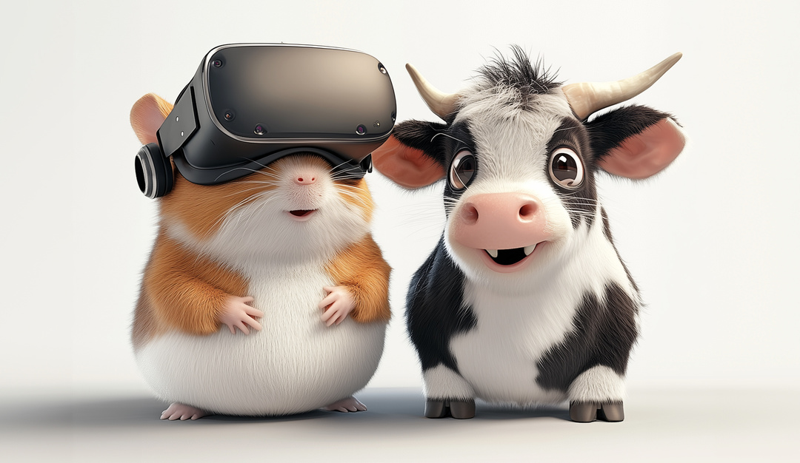

I am a geek, an engineer at heart, and above all, a dreamer who has never been afraid to challenge the impossible. I have always been driven by curiosity, creativity, and the desire to push technology beyond its perceived limits. I love exploring unconventional ideas, questioning established boundaries, and turning ambitious concepts into working realities. For me, technology is not just about what is possible today, but about discovering what could be possible tomorrow. I believe that the greatest achievements begin with a dream and the courage to make it real. 2014: MapfactorMy career began as a software developer working on a car navigation application for smartphones. One of my first major responsibilities was taking an existing OpenGL ES renderer prototype and completely rewriting it, with a strong focus on minimizing power consumption while maximizing rendering performance and efficiency. The goal was to deliver smooth graphics while keeping resource usage and battery drain as low as possible. I also designed and implemented an intelligent address search engine inspired by Google's search experience. Instead of forcing users through multiple steps to select a country, city, street, and house number, the new system allowed them to enter an address naturally in a single search field, making navigation faster and much more intuitive. Another important contribution was unifying the application's mobile codebase into a shared cross-platform implementation. This allowed us to maintain and develop a single codebase targeting Android, iOS, and Windows, significantly reducing code duplication and simplifying further development across platforms. 2022: CiscoAfter exploring different career paths, working with several startups, and spending time as a self-employed developer, I finally found a professional environment that truly suits my skills, interests, and passion for technology. Joining the development team behind Webex Hologram was a particularly rewarding milestone in my career. Working on such a futuristic technology gave me the opportunity to tackle exciting and technically demanding challenges, explore new possibilities, and contribute to a product that pushes the boundaries of how people communicate and collaborate. I especially enjoyed being part of a project where innovation was not just a buzzword but an everyday reality. It allowed me to combine my experience as a software developer with my curiosity for emerging technologies, while constantly learning, experimenting, and solving problems that had no straightforward solutions. 2024: Team BeefTeam Beef had earned a strong reputation in the VR community for delivering high-quality, immersive ports of classic games, breathing new life into legendary titles through Virtual Reality. Their work had become a benchmark for what was possible when technical skill met a deep passion for retro gaming and open platforms. As part of our collaboration, we agreed that my focus would remain on community-driven, non-commercial projects. This decision wasn't made lightly, but it reflected my personal values and the kind of work that inspired me most. While commercial projects could offer financial rewards, they often came with additional pressure, strict deadlines, and creative constraints that didn't always align with my preferred approach to development. What truly motivated me was the open-source philosophy: building tools, experiences, and innovations that were accessible, transparent, and rooted in community collaboration. I found genuine satisfaction in sharing my work openly, contributing to something larger than myself, and earning recognition from peers and players who valued passion over profit. There was a unique kind of joy in knowing that my code was helping others experience something special, especially when it was done for the love of the craft. Joining Team Beef in this capacity felt like a natural and meaningful next step. It allowed me to stay true to what I believed in: working freely, learning continuously, and giving back to the communities that had shaped me as a developer. I was excited about the journey ahead and the opportunities to bring more unforgettable VR experiences to life, with the community, for the community.  2026: Passion vs PurposeAs AI increasingly takes over the creation of VR content, I feel that my journey in this field has reached a natural turning point. What once required years of technical knowledge, countless hours of experimentation, and overcoming seemingly impossible limitations is becoming increasingly accessible through AI. I believe this will fundamentally change how VR experiences are created, and I no longer feel the same need to pursue this direction as a major part of my free time. After everything I have contributed, I decided it was time to step away from Team Beef and explore a different chapter of my career. I am staying at Cisco, focusing on engineering and technology where deep technical knowledge, reliability, security, and real-world problem-solving remain essential. I want to invest my time in things that have a lasting purpose and where experience, creativity, and understanding how things work under the hood continue to matter. Rather than competing with AI in areas where it can increasingly take over the creative process, I prefer to concentrate on challenges where human engineering expertise makes a meaningful difference. In my spare time, I will continue developing WinlatorXR. It is the one hobby project that still gives me a genuine sense of purpose and excitement. Emulation, compatibility engineering, and making software run on hardware it was never designed for remain challenges that I find deeply rewarding. There is still so much unexplored potential in standalone headsets, and I enjoy being able to push their capabilities beyond what their manufacturers originally intended. WinlatorXR represents everything I have always enjoyed about engineering: challenging limitations, experimenting with unconventional approaches, and turning ideas that once seemed impossible into working technology. For now, this is where I want to focus my curiosity and creativity. |